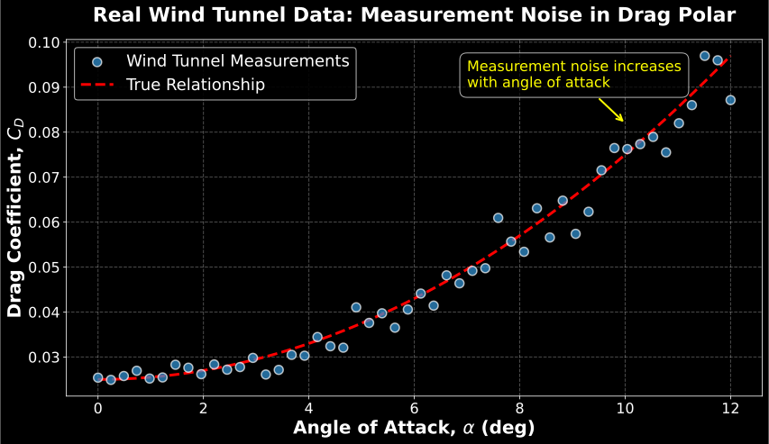
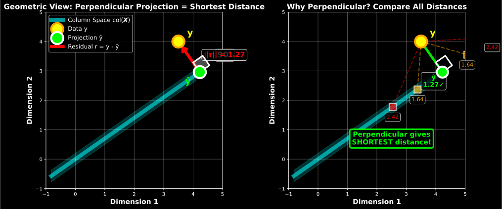
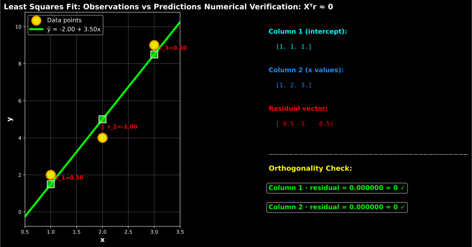

Linear Regression
AERO 689: Introduction to Machine Learning for Aerospace Engineers
Dr. Raktim Bhattacharya
Texas A&M University - Aerospace Engineering
Learning Objectives
Apply linear regression to aerospace performance prediction
Understand least squares method and gradient descent
Implement drag coefficient prediction from wind tunnel data
Validate models using aerospace-specific metrics
The Fuel Crisis Challenge
The $100 Million Question
Scenario : An airline operates 200 aircraft
Fuel cost : $50M+ annually per aircraft typeChallenge : Predict fuel consumption for flight planningCurrent method : Simplified performance chartsML opportunity : Precise models using real flight data
Real Impact
1% fuel savings = $100M+ industry-wide annually
Better range predictions = route optimization
Accurate payload calculations = safety + efficiency
Question for class : What factors affect aircraft fuel consumption?
From Wind Tunnel to Flight - The Data Challenge
Traditional Approach: Empirical Models
Parabolic Drag Polar \[
C_D = C_{D_0} + KC_L^2
\]
Problem : Assumes perfect conditionsReality : Real flights have weather, weight variations, engine degradationSolution : ML to learn from actual operational data
Available Data Sources
Wind Tunnel Data : Controlled, precise, limited conditionsFlight Test Data : Real conditions, expensive to collectOperational Data : Massive scale, noisy, representative
The Linear Regression Framework
Goal : Predict drag coefficient (CD) from flight parametersInput features : Angle of attack (\(\alpha\) ), Mach number (M), Reynolds number (Re)Output : Drag coefficient for performance calculations
Mathematical Foundation: The Linear Model
For \(n\) samples and \(d\) features, the linear regression model is:
\[
y_i = \beta_0 + \beta_1 x_{i1} + \beta_2 x_{i2} + \cdots + \beta_d x_{id} + \epsilon_i
\]
where:
\(y_i\) : response variable (e.g., drag coefficient)\(x_{ij}\) : \(j\) -th feature of \(i\) -th sample (e.g., Mach, \(\alpha\) , Re)\(\beta_j\) : regression coefficients (parameters to learn)\(\epsilon_i\) : error term (noise, unmodeled physics)
Vector Notation
\[
\boldsymbol{y} = \boldsymbol{X}\boldsymbol{\beta}^\ast + \boldsymbol{\epsilon}
\]
where \(\boldsymbol{X} \in \mathbb{R}^{n \times (d+1)}\) is the design matrix with augmented 1’s for intercept
Key Insight: What “Linear” Means
“Linear Regression” = Linear in Parameters
The model : \[y = \beta_0 \phi_0(\boldsymbol{x}) + \beta_1 \phi_1(\boldsymbol{x}) + \cdots + \beta_d \phi_d(\boldsymbol{x})\]
Where :
\(\phi_j(\boldsymbol{x})\) are basis functions or features (can be nonlinear!)
Each \(\phi_j: \mathbb{R}^p \to \mathbb{R}\) maps input features to a scalar
Examples: \(\phi_0(\boldsymbol{x}) = 1\) , \(\phi_1(\boldsymbol{x}) = \alpha\) , \(\phi_2(\boldsymbol{x}) = \alpha^2\) , \(\phi_3(\boldsymbol{x}) = \sin(M)\)
Output dimension matches \(y\) (scalar for scalar regression, vector for multi-output)
\(\beta_j\) are coefficients (what we solve for)
Scalars for single-output regression (predicting one quantity like \(C_D\) )
Could be matrices for multi-output regression (predicting multiple quantities simultaneously)
Note : Design matrix \(\boldsymbol{X}\) stays the same (n × (d+1)), only \(\boldsymbol{\beta}\) and \(\boldsymbol{y}\) change dimensions Model is linear in \(\beta_j\) , not in \(\boldsymbol{x}\)
Why it matters :
Linearity in \(\boldsymbol{\beta}\) → closed-form solution exists
Can model complex nonlinear phenomena
Optimization remains convex (one global minimum)
Aerospace Example
Drag coefficient model : \[
C_D = \beta_0 + \beta_1\alpha + \beta_2\alpha^2 + \beta_3 M^2 + \beta_4(\alpha M)
\]
Analysis :
Nonlinear function of \(\alpha\) and \(M\) (parabola, interactions)Linear combination of terms: \(\beta_0 \cdot 1 + \beta_1 \cdot \alpha + \beta_2 \cdot \alpha^2 + \cdots\) Linear in coefficients : doubling \(\beta_2\) doubles the \(\alpha^2\) contribution
Matrix form : \(\boldsymbol{y} = \boldsymbol{X}\boldsymbol{\beta}^\ast\) where \[
\boldsymbol{X} = \begin{bmatrix}
1 & \alpha_1 & \alpha_1^2 & M_1^2 & \alpha_1 M_1 \\
1 & \alpha_2 & \alpha_2^2 & M_2^2 & \alpha_2 M_2 \\
\vdots & \vdots & \vdots & \vdots & \vdots
\end{bmatrix}
\]
Real Data: Noisy Measurements
Wind Tunnel Data Example

Key observations :
Data points scatter around true parabolic relationship
Noise represents: sensor precision limits, flow unsteadiness, model simplification
This is why we need the error term \(\epsilon_i\) in our model!
The Optimization Problem
Objective: Minimize Squared Error
Residual Sum of Squares (RSS) : \[
\text{RSS}(\boldsymbol{\beta}) = \sum_{i=1}^n (y_i - \hat{y}_i)^2 = \sum_{i=1}^n (y_i - \boldsymbol{x}_i^T\boldsymbol{\beta})^2
\]
Matrix form : \[
\text{RSS}(\boldsymbol{\beta}) = \|\boldsymbol{y} - \boldsymbol{X}\boldsymbol{\beta}\|^2 = (\boldsymbol{y} - \boldsymbol{X}\boldsymbol{\beta})^T(\boldsymbol{y} - \boldsymbol{X}\boldsymbol{\beta})
\]
Optimization goal : \[
\boldsymbol{\beta}^\ast = \arg\min_{\boldsymbol{\beta}} \text{RSS}(\boldsymbol{\beta})
\]
Physical interpretation : Find aircraft model parameters that best match observed performance data
Derivation: Normal Equations
Step 1: Expand the objective function
\[
\text{RSS}(\boldsymbol{\beta}) = \boldsymbol{y}^T\boldsymbol{y} - 2\boldsymbol{\beta}^T\boldsymbol{X}^T\boldsymbol{y} + \boldsymbol{\beta}^T\boldsymbol{X}^T\boldsymbol{X}\boldsymbol{\beta}
\]
Step 2: Take derivative with respect to \(\boldsymbol{\beta}\)
\[
\frac{\partial \text{RSS}}{\partial \boldsymbol{\beta}} = -2\boldsymbol{X}^T\boldsymbol{y} + 2\boldsymbol{X}^T\boldsymbol{X}\boldsymbol{\beta}
\]
Step 3: Set to zero and solve
\[
\boldsymbol{X}^T\boldsymbol{X}\boldsymbol{\beta}^\ast = \boldsymbol{X}^T\boldsymbol{y}
\]
Normal Equations
Step 4: Solution (if \(\boldsymbol{X}^T\boldsymbol{X}\) is invertible)
\[
\boldsymbol{\beta}^\ast = (\boldsymbol{X}^T\boldsymbol{X})^{-1}\boldsymbol{X}^T\boldsymbol{y}
\]
Geometric Interpretation: Understanding the Error
What is the Error?
Definition : The error (residual) is the difference between observed data and our prediction:
\[
\boldsymbol{r} = \boldsymbol{y} - \hat{\boldsymbol{y}} = \boldsymbol{y} - \boldsymbol{X}\boldsymbol{\beta}
\]
Our goal : Minimize the length of this error vector:
\[
\min_{\boldsymbol{\beta}} \|\boldsymbol{r}\|^2 = \min_{\boldsymbol{\beta}} \|\boldsymbol{y} - \boldsymbol{X}\boldsymbol{\beta}\|^2
\]
Key Geometric Insight
Column space col(\(\boldsymbol{X}\) ) : Space spanned by basis functions (all possible predictions \(\boldsymbol{X}\boldsymbol{\beta}\) )Data y : Our actual observations (usually not in col(\(\boldsymbol{X}\) ) due to noise)Question : What is the best representation of \(y\) in the feature space?
Answer: Error is orthogonal to feature space \(\boldsymbol{X}^T\boldsymbol{r} = \boldsymbol{0}\) (error is orthogonal to all basis functions)
Why Projection Minimizes Error
The Fundamental Geometric Principle
Projection Theorem : The shortest distance from a point to a subspace is achieved by the perpendicular projection .

Key Insight :
The optimal \(\hat{\boldsymbol{y}}\) is found by projecting \(\boldsymbol{r}\) onto col(\(\boldsymbol{X}\) ) and setting it to zero
This minimizes the error length: \(||\boldsymbol{r}|| = ||\boldsymbol{y} - \hat{\boldsymbol{y}}||\) is smallest
Mathematical statement : \(\boldsymbol{X}^T\boldsymbol{r} = \boldsymbol{X}^T(\boldsymbol{y} - \hat{\boldsymbol{y}}) = \boldsymbol{0}\)
Deriving the Optimal Solution via Projection
Step 1: State the Orthogonality Condition
From geometry : The error \(\boldsymbol{r} = \boldsymbol{y} - \hat{\boldsymbol{y}}\) must be perpendicular to col(\(\boldsymbol{X}\) )
\[
\boldsymbol{r} \perp \text{col}(\boldsymbol{X}) \quad \Longrightarrow \quad \boldsymbol{X}^T\boldsymbol{r} = \boldsymbol{0}
\]
This is the fundamental condition for least squares optimality:
\(\boldsymbol{X}^T \boldsymbol{r}\) is a vector of dot products between \(\boldsymbol{r}\) and each column of \(\boldsymbol{X}\) Each dot product = 0 means \(\boldsymbol{r}\) is perpendicular to that column
Zero vector means \(\boldsymbol{r}\) is perpendicular to all columns (entire col(\(\boldsymbol{X}\) ))
Deriving the Optimal Solution via Projection
Step 2: Express in Terms of β
Since optimal \(\hat{\boldsymbol{y}}^\ast = \boldsymbol{X}\boldsymbol{\beta}^\ast\) and \(\boldsymbol{r}^\ast = \boldsymbol{y} - \hat{\boldsymbol{y}}^\ast\) , substitute into the orthogonality condition:
\[
\boldsymbol{X}^T\boldsymbol{r}^\ast = \boldsymbol{0}
\]
\[
\boldsymbol{X}^T(\boldsymbol{y} - \hat{\boldsymbol{y}}^\ast) = \boldsymbol{0}
\]
\[
\boldsymbol{X}^T(\boldsymbol{y} - \boldsymbol{X}\boldsymbol{\beta}^\ast) = \boldsymbol{0}
\]
Now we have an equation for \(\boldsymbol{\beta}^\ast\) that we can solve!
Deriving the Optimal Solution via Projection
Step 3: Derive the Normal Equations
Expand the orthogonality condition:
\[
\boldsymbol{X}^T(\boldsymbol{y} - \boldsymbol{X}\boldsymbol{\beta}^\ast) = \boldsymbol{0}
\]
\[
\boldsymbol{X}^T\boldsymbol{y} - \boldsymbol{X}^T\boldsymbol{X}\boldsymbol{\beta}^\ast = \boldsymbol{0}
\]
\[
\boldsymbol{X}^T\boldsymbol{X}\boldsymbol{\beta}^\ast = \boldsymbol{X}^T\boldsymbol{y}
\]
These are the Normal Equations – a linear system for \(\boldsymbol{\beta}^\ast\) .
Deriving the Optimal Solution via Projection
Step 4: Solve for \(\boldsymbol{\beta}^\ast\)
Starting from the normal equations:
\[
\boldsymbol{X}^T\boldsymbol{X}\boldsymbol{\beta}^\ast = \boldsymbol{X}^T\boldsymbol{y}
\]
Assuming \(\boldsymbol{X}^T\boldsymbol{X}\) is invertible (columns of \(\boldsymbol{X}\) are linearly independent):
\[
\boldsymbol{\beta}^\ast = (\boldsymbol{X}^T\boldsymbol{X})^{-1}\boldsymbol{X}^T\boldsymbol{y}
\]
This is the closed-form solution for ordinary least squares!
Key insight : We derived this using projection geometry (\(\boldsymbol{r}\) ⊥ col(\(\boldsymbol{X}\) )) instead of calculus (∂J/∂β = 0). Both paths lead to the same solution!
Concrete Example: Verify Orthogonality
Simple Linear Regression: y = β₀ + β₁x
X = [[1. 1.]
[1. 2.]
[1. 3.]]
β̂ = [-2. 3.5]
Residual = [ 0.5 -1. 0.5]

Confirmed : Both dot products ≈ 0, proving the residual is perpendicular to both columns of \(\boldsymbol{X}\) !
The Projection Matrix
From the normal equations \(\boldsymbol{X}^T\boldsymbol{X}\boldsymbol{\beta}^\ast = \boldsymbol{X}^T\boldsymbol{y}\) , we get:
\[
\boldsymbol{\beta}^\ast = (\boldsymbol{X}^T\boldsymbol{X})^{-1}\boldsymbol{X}^T\boldsymbol{y}
\]
Predicted values : \[
\hat{\boldsymbol{y}} = \boldsymbol{X}\boldsymbol{\beta}^\ast = \boldsymbol{X}(\boldsymbol{X}^T\boldsymbol{X})^{-1}\boldsymbol{X}^T\boldsymbol{y} = \boldsymbol{P}\boldsymbol{y}
\]
where \(\boldsymbol{P} = \boldsymbol{X}(\boldsymbol{X}^T\boldsymbol{X})^{-1}\boldsymbol{X}^T\) is the projection matrix
Key Properties
Idempotent : \(\boldsymbol{P}^2 = \boldsymbol{P}\) (projecting twice = projecting once)Symmetric : \(\boldsymbol{P}^T = \boldsymbol{P}\) Projects onto \(\text{col}(\boldsymbol{X})\) : \(\boldsymbol{P}\boldsymbol{X} = \boldsymbol{X}\) Residual matrix : \(\boldsymbol{I} - \boldsymbol{P}\) projects onto orthogonal complement
Aerospace insight : The projection matrix \(\boldsymbol{P}\) extracts the component of observed drag that can be explained by our aerodynamic features, leaving unexplained variance in the residuals
When Direct Solution Fails
Challenges with \((\boldsymbol{X}^T\boldsymbol{X})^{-1}\)
Problem 1: Singular Matrix
Occurs when \(n < d+1\) (more features than samples)
Multicollinearity: highly correlated features
Problem 2: Computational Cost
Matrix inversion: \(O(d^3)\) operations
For large \(d\) (high-dimensional features), impractical
Problem 3: Numerical Stability
Ill-conditioned matrices (high condition number)
Small perturbations → large changes in solution
Solutions
Regularization : Ridge, LassoGradient descent : Iterative optimizationQR decomposition : Numerically stable direct methodSVD : Most stable, handles rank deficiency
Gradient Descent: Iterative Approach
Algorithm
Initialize : \(\boldsymbol{\beta}^{(0)}\) randomly or to zeros
Iterate : For \(t = 0, 1, 2, \ldots\) until convergence:
\[
\boldsymbol{\beta}^{(t+1)} = \boldsymbol{\beta}^{(t)} - \eta \nabla_{\boldsymbol{\beta}} \text{RSS}(\boldsymbol{\beta}^{(t)})
\]
where \(\eta > 0\) is the learning rate
Gradient Computation
\[
\nabla_{\boldsymbol{\beta}} \text{RSS} = -2\boldsymbol{X}^T(\boldsymbol{y} - \boldsymbol{X}\boldsymbol{\beta})
\]
Update rule : \[
\boldsymbol{\beta}^{(t+1)} = \boldsymbol{\beta}^{(t)} + 2\eta \boldsymbol{X}^T(\boldsymbol{y} - \boldsymbol{X}\boldsymbol{\beta}^{(t)})
\]
Gradient Descent Variants
Batch Gradient Descent
Use all \(n\) samples in each iteration: \[
\boldsymbol{\beta}^{(t+1)} = \boldsymbol{\beta}^{(t)} - \eta \nabla_{\boldsymbol{\beta}} \text{RSS}(\boldsymbol{\beta}^{(t)})
\]
✓ Stable convergence
✗ Slow for large \(n\)
Stochastic Gradient Descent (SGD)
Use one random sample \(i\) per iteration: \[
\boldsymbol{\beta}^{(t+1)} = \boldsymbol{\beta}^{(t)} + 2\eta \boldsymbol{x}_i(y_i - \boldsymbol{x}_i^T\boldsymbol{\beta}^{(t)})
\]
✓ Fast updates, scales to large data
✗ Noisy, oscillates around minimum
Mini-Batch Gradient Descent
Use subset of \(b\) samples per iteration (typical: \(b = 32, 64, 128\) )
✓ Balance between speed and stability
✓ Vectorized operations (GPU-friendly)
Learning Rate Selection
Critical Hyperparameter
\[
\boldsymbol{\beta}^{(t+1)} = \boldsymbol{\beta}^{(t)} - \eta \nabla_{\boldsymbol{\beta}} \text{RSS}(\boldsymbol{\beta}^{(t)})
\]
Too small (\(\eta \ll 1\) ):
Slow convergence
Many iterations needed
Computationally expensive
Too large (\(\eta \gg 1\) ):
Overshooting minimum
Oscillation or divergence
Never converges
Adaptive Learning Rates
Learning rate decay : \(\eta_t = \frac{\eta_0}{1 + kt}\) Momentum : Use exponentially weighted moving average of gradientsAdam : Adaptive moment estimation (modern default)Line search : Optimize \(\eta\) at each iteration
Statistical Properties: Assumptions
Classical Linear Regression Assumptions
Linearity : True relationship is \(\boldsymbol{y} = \boldsymbol{X}\boldsymbol{\beta} + \boldsymbol{\epsilon}\)
Independence : Samples \((x_i, y_i)\) are i.i.d.
Homoscedasticity : Constant error variance \(\text{Var}(\epsilon_i) = \sigma^2\)
Data collection context : Measurement error should be consistent across operating rangeExample violation : Wind tunnel balance accuracy degrades at low forces (high \(\alpha\) )Real-world impact : Sensor noise may increase with altitude, velocity, or dynamic pressure
Normality : \(\epsilon_i \sim \mathcal{N}(0, \sigma^2)\)
No multicollinearity : \(\boldsymbol{X}^T\boldsymbol{X}\) is full rank
Aerospace context : Features should not be perfectly correlatedCommon violations :
Altitude and air density (directly related via ISA standard atmosphere)
Dynamic pressure and velocity (\(q \propto V^2\) at fixed altitude)
Mach number and velocity at fixed altitude (\(M = V/a\) , where \(a\) is constant)
Lift coefficient and angle of attack in linear regime (attached flow)
Consequences : Unstable coefficient estimates, inflated standard errors, unreliable predictionsDetection : Use VIF (Variance Inflation Factor) to identify problematic correlationsSolutions : Regularization (Ridge/Lasso), dimensionality reduction (PCA), or remove redundant features
Gauss-Markov: Implications for Practice
Gauss-Markov Theorem
Under assumptions 1-3 : The OLS estimator \(\boldsymbol{\beta}^\ast = (\boldsymbol{X}^T\boldsymbol{X})^{-1}\boldsymbol{X}^T\boldsymbol{y}\) is:
BLUE : Best Linear Unbiased EstimatorMinimum variance among all unbiased linear estimators
What Does BLUE Mean?
Best : Minimum variance (most precise estimates)
Among all linear unbiased estimators, OLS has smallest variance
No other linear unbiased method gives tighter confidence intervals
Linear : Estimator is linear function of \(\boldsymbol{y}\)
Form: \(\boldsymbol{\beta}^\ast = \boldsymbol{C}\boldsymbol{y}\) for some matrix \(\boldsymbol{C}\)
OLS: \(\boldsymbol{C} = (\boldsymbol{X}^T\boldsymbol{X})^{-1}\boldsymbol{X}^T\)
Unbiased : \(E[\boldsymbol{\beta}^\ast] = \boldsymbol{\beta}_\text{true}\)
On average, estimates equal true parameter values
No systematic over/under-estimation
Aerospace Context
Critical for certification :
Flight envelope must be determined with minimal uncertainty
BLUE property ensures tightest bounds on performance predictions
Regulatory compliance requires unbiased, minimum-variance estimates
Statistical Properties: Distribution
Under Normality Assumption
If we assume \(\epsilon_i \sim \mathcal{N}(0, \sigma^2)\) independently, then our OLS estimator has a known distribution:
\[
\boldsymbol{\beta}^\ast \sim \mathcal{N}\left(\boldsymbol{\beta}_\text{true}, \sigma^2(\boldsymbol{X}^T\boldsymbol{X})^{-1}\right)
\]
What does this mean?
\(\boldsymbol{\beta}^\ast\) is unbiased : \(E[\boldsymbol{\beta}^\ast] = \boldsymbol{\beta}_\text{true}\) Covariance matrix : \(\text{Cov}(\boldsymbol{\beta}^\ast) = \sigma^2(\boldsymbol{X}^T\boldsymbol{X})^{-1}\) Diagonal elements give variances: \(\text{Var}(\beta_j^\ast) = \sigma^2[(\boldsymbol{X}^T\boldsymbol{X})^{-1}]_{jj}\)
Off-diagonal elements show correlations between coefficient estimates
Practical implication : We can construct confidence intervals and perform hypothesis tests!
Estimating the Noise Variance
Residual Variance Estimator
Since we don’t know the true noise variance \(\sigma^2\) , we estimate it from the residuals:
\[
\hat{\sigma}^2 = \frac{1}{n - d - 1}\sum_{i=1}^n (y_i - \hat{y}_i)^2 = \frac{\text{RSS}}{n - d - 1}
\]
Why divide by \(n - d - 1\) instead of \(n\) ?
We estimated \(d + 1\) parameters (\(\beta_0, \beta_1, \ldots, \beta_d\) )
This uses up \(d + 1\) degrees of freedom
Remaining degrees of freedom: \(n - (d + 1) = n - d - 1\)
Division by degrees of freedom makes \(\hat{\sigma}^2\) unbiased : \(E[\hat{\sigma}^2] = \sigma^2\)
Aerospace example : If we fit drag as \(C_D = \beta_0 + \beta_1 \alpha + \beta_2 \alpha^2\) using \(n = 20\) data points:
We have \(d = 2\) features (\(\alpha, \alpha^2\) ) plus intercept
Degrees of freedom: \(20 - 2 - 1 = 17\)
Confidence Intervals for Coefficients
Understanding Coefficient Uncertainty
Standard error of \(\beta_j^\ast\) : \[
\text{SE}(\beta_j^\ast) = \sqrt{\hat{\sigma}^2 \left[(\boldsymbol{X}^T\boldsymbol{X})^{-1}\right]_{jj}}
\]
This measures the sampling variability of our estimate.
Confidence interval (at \(100(1-\gamma)\%\) confidence level): \[
\beta_j^\ast \pm t_{\gamma/2, n-d-1} \cdot \text{SE}(\beta_j^\ast)
\]
where \(t_{\gamma/2, n-d-1}\) is the critical value from the t-distribution with \(n-d-1\) degrees of freedom.
Interpretation : We are \(100(1-\gamma)\%\) confident the true parameter \(\beta_j\) lies in this interval.
Aerospace example : For \(C_L = \beta_0 + \beta_1 \alpha\) , if \(\beta_1^\ast = 0.105 \pm 0.008\) (95% CI), we’re confident the true lift slope is between 0.097 and 0.113 per degree.
Hypothesis Testing for Individual Coefficients
The Question: Does This Feature Matter?
Scenario : We’ve estimated \(\beta_j^\ast\) from data. But is this coefficient significantly different from zero , or could it just be noise?
Null hypothesis \(H_0\) : \(\beta_j = 0\)
The true coefficient is zero
Feature \(j\) has no real effect on the response
Any non-zero \(\beta_j^\ast\) we observed is just due to random sampling
Alternative hypothesis \(H_1\) : \(\beta_j \neq 0\)
The true coefficient is not zero
Feature \(j\) does affect the response
Hypothesis Testing for Individual Coefficients
The Test Statistic
Test statistic (t-statistic): \[
t_j = \frac{\beta_j^\ast}{\text{SE}(\beta_j^\ast)} = \frac{\text{Estimated coefficient}}{\text{Standard error of estimate}}
\]
Interpretation :
Measures how many standard errors the estimate is away from zero
If \(\beta_j = 0\) truly, we expect \(\beta_j^\ast \approx 0\) (within sampling error)
Large \(|t_j|\) means estimate is far from zero → unlikely if \(H_0\) is true
Distribution under \(H_0\) : \[
t_j \sim t_{n-d-1}
\]
If the null hypothesis is true, \(t_j\) follows a t-distribution with \(n-d-1\) degrees of freedom
Hypothesis Testing for Individual Coefficients
Making the Decision
Two equivalent approaches :
1. Critical value approach :
Reject \(H_0\) if \(|t_j| > t_{\gamma/2, n-d-1}\)
Critical value \(t_{\gamma/2, n-d-1}\) is the threshold from the t-distributionIf our test statistic \(|t_j|\) exceeds this threshold, reject \(H_0\)
Example: For 95% confidence (\(\gamma = 0.05\) ), \(n = 50\) , \(d = 2\) : critical value ≈ 2.01
If \(|t_j| = 3.5 > 2.01\) , reject \(H_0\) (evidence against null)
If \(|t_j| = 1.2 < 2.01\) , fail to reject \(H_0\) (insufficient evidence)
2. P-value approach :
P-value = \(P(|t| > |t_j| \mid H_0)\) = probability of seeing \(|t_j|\) this large (or larger) if \(H_0\) were trueReject \(H_0\) if p-value \(< \alpha\) (commonly \(\alpha = 0.05\) )
Smaller p-value = stronger evidence against \(H_0\)
Hypothesis Testing for Individual Coefficients
Aerospace Example
Testing if Mach number affects drag coefficient
Model: \(C_D = \beta_0 + \beta_1 M + \beta_2 M^2 + \epsilon\)
Hypotheses :
\(H_0: \beta_1 = 0\) (Mach number has no linear effect on drag)\(H_1: \beta_1 \neq 0\) (Mach number does affect drag linearly)
Results from data :
\(\beta_1^\ast = 0.042\) \(\text{SE}(\beta_1^\ast) = 0.010\) \(t_1 = \frac{0.042}{0.010} = 4.2\) \(p-\text{value} = 0.0003\)
Interpretation :
Our estimate is 4.2 standard errors away from zero
If \(H_0\) were true (\(\beta_1 = 0\) ), probability of seeing \(|t| \geq 4.2\) is only 0.03%
Strong evidence that Mach number affects dragDecision : Reject \(H_0: \beta_1 = 0\) at \(\alpha = 0.05\) level
Testing the Overall Model: F-Test
The Big Picture Question
Individual t-tests ask: “Does this specific feature matter?”
F-test asks: “Does any feature matter at all?”
Null hypothesis \(H_0\) : \(\beta_1 = \beta_2 = \cdots = \beta_d = 0\)
All feature coefficients are zero (only intercept \(\beta_0\) matters)Best prediction is just the mean: \(\hat{y} = \bar{y}\)
Model with features is no better than trivial baseline
Alternative hypothesis \(H_1\) : At least one \(\beta_j \neq 0\)
At least one feature has a real effectModel with features does better than just predicting the mean
Testing the Overall Model: F-Test
The F-Statistic
\[
F = \frac{(\text{TSS} - \text{RSS})/d}{\text{RSS}/(n-d-1)} \sim F_{d, n-d-1} \text{ under } H_0
\]
where:
\(\text{TSS} = \sum_{i=1}^n (y_i - \bar{y})^2\) = total sum of squares (total variance in \(y\) )\(\text{RSS} = \sum_{i=1}^n (y_i - \hat{y}_i)^2\) = residual sum of squares (unexplained variance)\(\bar{y} = \frac{1}{n}\sum_{i=1}^n y_i\) sample mean of observed values (just average the data)\(\hat{y}_i = \boldsymbol{x}_i^T\boldsymbol{\beta}^*\) predicted value from regression model (uses features)
What is this testing?
The F-test asks: “Is my regression model with features significantly better than just predicting the mean \(\bar{y}\) every time?”
Intuition : Imagine two competing strategies:
Naive approach : Ignore all features, always guess \(\bar{y}\) (e.g., always predict average drag coefficient)Model approach : Use features \(\boldsymbol{x}\) to predict \(\hat{y}\) (e.g., use angle of attack to predict drag)
The F-statistic measures how much better the model is compared to the naive baseline.
Testing the Overall Model: F-Test
Breaking down the formula :
\[
F = \frac{\text{Variance explained by features (per feature)}}{\text{Unexplained variance (per degree of freedom)}}
\]
Numerator \((\text{TSS} - \text{RSS})/d\) :
\(\text{TSS} - \text{RSS}\) = explained sum of squares (ESS) = how much variance the model capturesThink of it as: “Total variance in data” minus “What’s left unexplained” = “What we successfully explained”
Divided by \(d\) (number of features) = average explanation per feature
This normalization prevents unfair advantage to models with many features
Denominator \(\text{RSS}/(n-d-1)\) :
This is \(\hat{\sigma}^2\) = mean squared error (MSE) = average squared residual
Divided by \((n-d-1)\) degrees of freedom to get an unbiased estimate
Represents the typical prediction error your model makes
This is the “noise floor”—the baseline variance you can’t reduce
Testing the Overall Model: F-Test
The F-ratio logic :
\[
F = \frac{\text{Average variance explained per feature}}{\text{Average variance of residuals}}
\]
If features are truly useless , explained variance ≈ residual variance → \(F \approx 1\)
If features are useful , explained variance ≫ residual variance → \(F \gg 1\)
F-distribution tells us: “How likely is this F-value if features were truly useless?”
Interpretation :
Large F (≫ 1): Model explains much more than noise → features are useful, reject \(H_0\) Small F (≈ 1): Model barely better than just predicting \(\bar{y}\) → features not useful, fail to reject \(H_0\) Critical threshold : Compare to \(F_{d, n-d-1}\) distribution at chosen significance level
F-Test: Detailed Aerospace Example
Scenario: Predicting Business Jet Range
Engineering problem : Predict maximum range for a business jet based on mission parameters
Dataset : 40 flights from flight test program
Features :
\(x_1\) = Takeoff weight (1000s kg) — heavier aircraft burns more fuel\(x_2\) = Cruise speed (Mach number) — faster flight reduces range\(x_3\) = Cruise altitude (1000s ft) — higher altitude improves efficiency
Response :
\(y\) = Maximum range (km)
Regression model : \[
\text{Range} = \beta_0 + \beta_1(\text{Weight}) + \beta_2(\text{Speed}) + \beta_3(\text{Altitude}) + \epsilon
\]
F-Test Example: The Data
Summary Statistics from Flight Tests
Response variable (Range in km):
Mean: \(\bar{y} = 5250\) km (average range across all flights)
Standard deviation: 354 km
Min: 4420 km, Max: 6100 km
Question we’re asking :
Is this regression model with 3 features significantly better than just predicting \(\bar{y} = 5250\) km every time?
Competing approaches :
Naive model \(H_0\) : Ignore all features, always predict \(\bar{y} = 5250\) km
Simple, but doesn’t use any information about weight, speed, altitude
Regression model \(H_1\) : Use features to make informed predictions
More complex, but should predict better if features matter
F-Test Example: Computing the Statistic
Step 1: Calculate Total Sum of Squares (TSS)
TSS measures total variance in the data around the mean:
\[
\text{TSS} = \sum_{i=1}^{40} (y_i - \bar{y})^2 = 125{,}000 \text{ km}^2
\]
Interpretation : If we only predict \(\bar{y} = 5250\) km, our total squared error is 125,000 km²
Step 2: Fit Regression and Calculate Residual Sum of Squares (RSS)
After fitting the model, we get predictions \(\hat{y}_i\) for each flight:
\[
\text{RSS} = \sum_{i=1}^{40} (y_i - \hat{y}_i)^2 = 18{,}500 \text{ km}^2
\]
Interpretation : After using weight, speed, altitude in our model, squared error drops to 18,500 km²
F-Test Example: Understanding the Improvement
Step 3: Calculate Explained Sum of Squares
\[
\text{ESS} = \text{TSS} - \text{RSS} = 125{,}000 - 18{,}500 = 106{,}500 \text{ km}^2
\]
Visual interpretation :
Total variance: ████████████████████████ 125,000 km²
Explained by model: ████████████████████ 106,500 km² (85.2%)
Still unexplained: ████ 18,500 km² (14.8%)
Key insight : The model reduced prediction error by 85% compared to just using the mean!
But is this reduction statistically significant, or could it happen by chance?
F-Test Example: Computing the F-Statistic
Step 4: Normalize by Degrees of Freedom
Numerator — Average explained variance per feature: \[
\frac{\text{ESS}}{d} = \frac{106{,}500}{3} = 35{,}500 \text{ km}^2 \text{ per feature}
\]
Denominator — Mean squared error (MSE): \[
\frac{\text{RSS}}{n-d-1} = \frac{18{,}500}{40-3-1} = \frac{18{,}500}{36} = 514 \text{ km}^2
\]
This is \(\hat{\sigma}^2\) — the estimated variance of residuals.
Step 5: Calculate F-Statistic
\[
F = \frac{35{,}500}{514} = 69.1
\]
Interpretation : On average, each feature explains variance 69 times larger than the typical residual variance!
F-Test Example: Making the Decision
Step 6: Compare to F-Distribution
The F-statistic follows an \(F_{d, n-d-1} = F_{3, 36}\) distribution under \(H_0\) .
Critical value approach (at \(\gamma = 0.05\) significance):
Critical value from F-distribution: \(F_{\text{crit}} \approx 2.87\)
Found using statistical tables or software (e.g., Python’s scipy.stats.f.ppf(0.95, 3, 36))
This is the threshold: values above this are “unusual” if \(H_0\) is true
Our F-statistic: \(F = 69.1\)
Since \(69.1 \gg 2.87\) , reject \(H_0\)
p-value approach :
p-value = \(P(F_{3,36} \geq 69.1) < 0.0001\)
This is the probability of seeing such a large F if features were truly useless
Since p-value \(< 0.05\) , reject \(H_0\)
Conclusion : We have overwhelming evidence that at least one of (weight, speed, altitude) significantly affects aircraft range. The regression model is far superior to just predicting the mean.
F-Test Example: Practical Interpretation
What Does F = 69.1 Really Mean?
For the flight test engineer :
Strong predictive value : The features (weight, speed, altitude) capture real physics of rangeNot random chance : The model’s performance is not due to overfitting or luckUse it with confidence : Safe to use this model for mission planning and performance predictions
What it doesn’t tell you :
Which specific features are important? – need individual t-tests
How accurate individual predictions are? – need prediction intervals
Whether the model form is correct? – could be nonlinear effects
If you have the “right” features? – maybe missing engine efficiency, wind, etc.
Next step : Use individual coefficient t-tests to determine which of the three features contribute significantly.
Model Evaluation: How Good is Our Fit?
R-squared: The “Goodness of Fit” Metric
Aerospace scenario : You’ve modeled lift coefficient vs angle of attack. How well does your model explain the data?
R² tells you : What fraction of the variance is explained by your model?
\[
R^2 = 1 - \frac{\text{Prediction errors}}{\text{Total variance}} = 1 - \frac{\sum(y_i - \hat{y}_i)^2}{\sum(y_i - \bar{y})^2}
\]
Think of it as: How much better is my model than just using the average?
Example: Drag polar modeling
Without model: “Drag is around 0.025 on average” (just use mean)
With model: \(C_D = C_{D_0} + k C_L^2\) captures induced drag physics
If \(R^2 = 0.94\) : Model explains 94% of drag variation
Remaining 6%: Measurement noise, unmodeled effects (Reynolds number, surface roughness)
Model Evaluation: R-squared in Practice
Interpreting R² Values
\(R^2 = 0.99\)
Example : Altitude vs atmospheric pressurePhysics-based relationship is very strong
Model captures nearly all variation
Useful for precise predictions
\(R^2 = 0.75\)
Example : Fuel consumption vs flight parametersMultiple factors at play (weight, speed, wind, pilot technique)
Model captures main trends but misses some complexity
Good for general planning, not precise optimization
\(R^2 = 0.30\)
Example : Turbulence severity vs weather variablesMany unmeasured factors influence outcome
Model has some predictive power but high uncertainty
Use with caution, gather more features
Model Evaluation: The R² Trap
Problem: R² Always Increases with More Features!
Wind tunnel experiment : Modeling drag coefficient
Model 1 : \(C_D = \beta_0 + \beta_1 M\) (just Mach number) - \(R^2 = 0.78\)
Model 2 : Add Reynolds number: \(C_D = \beta_0 + \beta_1 M + \beta_2 Re\) - \(R^2 = 0.85\) ✓ Better!
Model 3 : Add random noise feature: \(C_D = \beta_0 + \beta_1 M + \beta_2 Re + \beta_3(\text{noise})\) - \(R^2 = 0.86\) ← Still increased! Even though noise has no meaning!
The problem : R² rewards complexity even when features add no real value
Solution : Use Adjusted R² which penalizes adding useless features
\[
R^2_{\text{adj}} = 1 - (1 - R^2)\frac{n-1}{n-d-1}
\]
Only increases if new feature improves fit more than expected by chance
Prediction Accuracy: RMSE
Root Mean Squared Error: Speaking the Engineer’s Language
RMSE = Average prediction error in the same units as your measurement
\[
\text{RMSE} = \sqrt{\frac{1}{n}\sum_{i=1}^n (y_i - \hat{y}_i)^2}
\]
Aerospace Example 1: Range Prediction
Model predicts aircraft range for different payloads
Actual range: 2,800 km, Predicted: 2,750 km → Error: 50 km
After many flights: RMSE = 85 km
Interpretation : “On average, range predictions are off by 85 km”Decision : Is ±85 km acceptable for mission planning? (Probably yes for long range, no for short hops)
Aerospace Example 2: Landing Distance
Model predicts touchdown point on runway
RMSE = 45 m Interpretation : Typical error is 45 meters from predicted spotDecision : With 2000m runway and 500m safety margin, this is acceptable
Prediction Accuracy: MAE vs RMSE
When Do Outliers Matter?
MAE (Mean Absolute Error) : Treats all errors equally
\[
\text{MAE} = \frac{1}{n}\sum_{i=1}^n |y_i - \hat{y}_i|
\]
RMSE : Penalizes large errors heavily (squaring effect)
Scenario: Predicting Stall Speed
You have 20 test flights. 18 predictions are within 2 knots. 2 predictions are off by 10 knots.
MAE ≈ 3 knots : Average error across all flightsRMSE ≈ 5 knots : Higher due to those 2 large errors
Which to use?
If you care equally about all predictions → MAE
If large errors are dangerous (safety-critical) → RMSE (penalizes big misses)
Aviation rule of thumb :
Operational planning (fuel, time estimates): MAE okaySafety limits (V-speeds, load factors): Use RMSE to be conservative
The Overfitting Problem
Wind tunnel scenario : 50 data points of \(C_L\) vs \(\alpha\)
Approach 1: Simple linear model
\(C_L = \beta_0 + \beta_1 \alpha\) Training RMSE: 0.08
Fits main trend, some scatter
Approach 2: Complex polynomial
\(C_L = \beta_0 + \beta_1 \alpha + \beta_2 \alpha^2 + \cdots + \beta_{10} \alpha^{10}\) Training RMSE: 0.02 (Much better!)
Passes through almost every point!
The test : New wind tunnel run with 10 fresh measurements
Simple model : Test RMSE = 0.09 (Similar to training)Complex model : Test RMSE = 0.31 (Much worse! 15x larger than training!)
What happened? Complex model overfit the noise in training data
Cross-Validation: Testing Without a Test Set
The Problem with Single Train-Test Splits
You have 100 flight test data points. How to evaluate your model?
Option 1: Single 80-20 split ❌
Train on 80 flights, test on 20 flights
Problem: Performance depends heavily on which 20 you held out
Lucky split: high-performing model might just have easy test cases
Unlucky split: good model might look bad with difficult test cases
Option 2: Cross-validation ✓
Everyone gets a chance to be test data Split 100 flights into 10 groups of 10
Train 10 different models, each time holding out a different group
Average performance across all 10 test groups
More reliable estimate of real-world performance
Cross-Validation: How It Works
5-Fold Cross-Validation Example
Scenario : 100 flight tests, modeling fuel consumption
Setup :
Randomly divide 100 flights into 5 groups of 20 flights each
Groups: A, B, C, D, E
The process :
Round 1 : Train on {A,B,C,D}, test on E → Error₁Round 2 : Train on {A,B,C,E}, test on D → Error₂Round 3 : Train on {A,B,D,E}, test on C → Error₃Round 4 : Train on {A,C,D,E}, test on B → Error₄Round 5 : Train on {B,C,D,E}, test on A → Error₅
Final estimate : \(\text{CV Error} = \frac{1}{5}(\text{Error}_1 + \cdots + \text{Error}_5)\)
Result : Every single flight was used for testing exactly once!
Cross-Validation: Practical Considerations
How Many Folds?
k = 5 or k = 10 (Most common in aerospace)
When : 50-500 data points (typical wind tunnel campaigns, flight tests)Why : Good balance between computational cost and reliabilityEach fold : Still has enough data for trainingExample : 200 wind tunnel runs → 10 folds of 20 runs each
k = 20 or Leave-One-Out (Expensive but thorough)
When : Very limited data (<50 points), expensive testsWhy : Use maximum data for trainingCost : Training many more modelsExample : 30 full-scale aircraft tests → Hold out 1 or 2 at a time
Aerospace best practice :
Research/development : k=10 standardCertification data (expensive): Consider leave-one-out or k=nLarge datasets (CFD, simulation): k=5 to save computation time
Model Evaluation Metrics: Complete Comparison
Summary of All Error Metrics
R² \(1 - \frac{\text{RSS}}{\text{TSS}}\) None
[0, 1]
Comparing models on same data
Intuitive (% variance explained)
Always increases with features
Adj. R² \(1 - (1-R^2)\frac{n-1}{n-d-1}\) None
[-∞, 1]
Model selection (complexity)
Penalizes useless features
Can be negative
MSE \(\frac{1}{n}\sum(y_i-\hat{y}_i)^2\) \(y^2\) [0, ∞)
Theoretical analysis
Easy to derive
Squared units, sensitive to outliers
RMSE \(\sqrt{\text{MSE}}\) Same as \(y\)
[0, ∞)
General aviation use Interpretable units Sensitive to outliers
MAE \(\frac{1}{n}\sum\|y_i-\hat{y}_i\|\) Same as \(y\)
[0, ∞)
Robust performance
Less sensitive to outliers
Harder to optimize
MAPE \(\frac{100}{n}\sum\frac{\|y_i-\hat{y}_i\|}{y_i}\) %
[0, ∞)
Relative comparison
Scale-independent
Undefined if \(y_i=0\)
Model Evaluation Metrics: Complete Comparison
Aerospace recommendations
Design/certification : Use RMSE (penalizes large errors for safety)Operational planning : Use MAE (typical errors for fuel/time estimates)Model comparison : Use Adj. R² (accounts for model complexity)Reporting results : Report multiple metrics for complete picture
Detailed Metric Analysis: R² and Adjusted R²
R² (Coefficient of Determination)
\[
R^2 = 1 - \frac{\sum_{i=1}^n(y_i - \hat{y}_i)^2}{\sum_{i=1}^n(y_i - \bar{y})^2} = 1 - \frac{\text{RSS}}{\text{TSS}} = \frac{\text{ESS}}{\text{TSS}}
\]
Physical interpretation :
Numerator RSS : Sum of squared residuals (what model can’t explain)Denominator TSS : Total variance in data (if we only knew \(\bar{y}\) )R² : Fraction of variance explained by the model1 - R² : Fraction of variance not explained by the model
Aerospace example - Lift slope prediction :
Wind tunnel data: 50 measurements of \(C_L\) vs \(\alpha\)
Simple model: \(C_L = \beta_0 + \beta_1\alpha\)
TSS = 2.45 (total variance), RSS = 0.12 (residual variance)
\(R^2 = 1 - \frac{0.12}{2.45} = 0.951\) → Model explains 95.1% of lift variationRemaining 4.9%: Measurement noise, 3D effects, tunnel wall interference
R² Limitations and Adjusted R²
Why R² Can Be Misleading
Problem 1: Always increases with more features
Adding ANY feature (even random noise) will increase R² or keep it the same, never decrease it.
Example :
Model A: \(C_D = \beta_0 + \beta_1\alpha\) → \(R^2 = 0.82\)
Model B: \(C_D = \beta_0 + \beta_1\alpha + \beta_2(\text{random noise})\) → \(R^2 = 0.823\)
Model B appears “better” but the extra feature is meaningless!
Solution: Adjusted R²
\[
R^2_{\text{adj}} = 1 - (1-R^2)\frac{n-1}{n-d-1} = 1 - \frac{\text{RSS}/(n-d-1)}{\text{TSS}/(n-1)}
\]
Penalizes each additional feature by reducing degrees of freedomOnly increases if new feature improves fit more than expected by chance
Can decrease or even be negative if model is worse than baseline
Adjusted R²: Detailed Example
Comparing Two Drag Models
Dataset : 60 wind tunnel runs at various \(\alpha\) and \(M\)
Model 1 (Simple) : \(C_D = \beta_0 + \beta_1\alpha + \beta_2\alpha^2\)
\(d = 2\) features, \(n = 60\) data pointsRSS = 0.0045, TSS = 0.0520
\(R^2 = 1 - \frac{0.0045}{0.0520} = 0.913\) \(R^2_{\text{adj}} = 1 - (1-0.913)\frac{60-1}{60-2-1} = 1 - 0.087 \times \frac{59}{57} = 0.910\)
Model 2 (Complex) : \(C_D = \beta_0 + \beta_1\alpha + \beta_2\alpha^2 + \beta_3 M + \beta_4 M^2 + \beta_5\alpha M\)
\(d = 5\) features, \(n = 60\) data pointsRSS = 0.0042, TSS = 0.0520
\(R^2 = 1 - \frac{0.0042}{0.0520} = 0.919\) → Slightly higher!\(R^2_{\text{adj}} = 1 - (1-0.919)\frac{60-1}{60-5-1} = 1 - 0.081 \times \frac{59}{54} = 0.911\)
Decision : Model 2 has slightly higher Adj. R² (0.911 vs 0.910), suggesting the Mach number terms add marginal value. But the improvement is small – consider Model 1 for simplicity unless transonic effects are critical.
Detailed Metric Analysis: MSE and RMSE
Mean Squared Error (MSE)
\[
\text{MSE} = \frac{1}{n}\sum_{i=1}^n(y_i - \hat{y}_i)^2 = \frac{\text{RSS}}{n}
\]
Properties :
Always positive (squared errors)Penalizes large errors heavily (quadratic penalty)Units : Squared units of response variableOptimization : Differentiable, easy to minimize (used in least squares)Statistical connection : Unbiased estimator of \(\sigma^2\) when using \(n-d-1\) denominator
Root Mean Squared Error (RMSE)
\[
\text{RMSE} = \sqrt{\text{MSE}} = \sqrt{\frac{1}{n}\sum_{i=1}^n(y_i - \hat{y}_i)^2}
\]
Why take the square root?
Returns to original units of the response
Makes interpretation intuitive: “Average prediction error in practical units”
Comparable to standard deviation
RMSE: Aerospace Applications
Example 1: Fuel Burn Prediction
Model - Predict fuel consumption (kg) for commercial flights
Results on test data :
Actual fuel: [12,500, 14,200, 13,800, 15,100, 12,900] kg
Predicted: [12,300, 14,500, 13,700, 15,000, 13,200] kg
Errors: [200, -300, 100, 100, -300] kg
MSE = \(\frac{1}{5}(200^2 + 300^2 + 100^2 + 100^2 + 300^2) = \frac{230000}{5} = 46000\) kg²
RMSE = 214 kg
Engineering interpretation :
“Fuel predictions are typically off by ±214 kg”
For a flight requiring ~13,500 kg, error is ~1.6%
Decision : Acceptable for operational planning with safety margins
RMSE: Aerospace Applications
Example 2: Takeoff Distance Prediction
Model - Predict takeoff roll distance (m) given weight, temperature, pressure altitude
RMSE = 35 m on validation set
Safety assessment :
Runway length: 2,400 m
Predicted takeoff distance: 1,650 m
With RMSE = 35 m, roughly 95% of predictions within ±70 m
Safety margin: 2,400 - 1,650 - 70 = 680 m ✓ Acceptable
Detailed Metric Analysis: MAE
Mean Absolute Error
\[
\text{MAE} = \frac{1}{n}\sum_{i=1}^n|y_i - \hat{y}_i|
\]
Properties :
Linear penalty : All errors treated equally (no squaring)Robust to outliers : Large errors don’t dominate as in RMSEUnits : Same as response variable (like RMSE)Optimization : Less smooth (absolute value not differentiable at 0)
MAE vs RMSE: Side-by-Side Comparison
Same Dataset, Different Stories
Scenario : Predicting landing rollout distance (10 test landings)
1
450
445
5
25
2
430
435
-5
25
3
460
455
5
25
4
440
448
-8
64
5
455
450
5
25
6
445
442
3
9
7
435
438
-3
9
8
470
460
10
100
9
442
445
-3
9
10
450
500
-50 2500
Calculations :
\(\text{MAE} = \frac{5+5+5+8+5+3+3+10+3+50}{10} = \frac{97}{10} = 9.7\) m\(\text{MSE} = \frac{25+25+25+64+25+9+9+100+9+2500}{10} = \frac{2791}{10} = 279.1\) m²\(\text{RMSE} = \sqrt{279.1} = 16.7\) m
Key insight : One bad prediction (50 m error) dramatically inflates RMSE but has less effect on MAE. Ratio RMSE/MAE = 1.72 indicates presence of outliers.
MAE vs RMSE: Decision Guide
Which Metric Should You Use?
Safety-Critical Applications → Use RMSE
When : Aircraft performance limits, structural loads, V-speeds, obstacle clearance
Why : Large errors can be catastrophic. RMSE heavily penalizes outliers.
Example : Predicting maximum load factor — if model occasionally predicts 20% low, structure could fail.
Operational Planning → Consider MAE
When : Fuel planning, schedule estimates, maintenance intervals
Why : Occasional outliers are acceptable; focus on typical performance.
Example : Taxi-out time — usually 10-15 min, occasionally 45 min (traffic). MAE captures typical experience.
Detailed Metric Analysis: MAPE
Mean Absolute Percentage Error
\[
\text{MAPE} = \frac{100\%}{n}\sum_{i=1}^n\left|\frac{y_i - \hat{y}_i}{y_i}\right|
\]
Properties :
Scale-independent : Expressed as percentage, comparable across different problemsIntuitive : Non-technical stakeholders understand “5% error”Asymmetric : Penalizes under-predictions more than over-predictionsUndefined for \(y_i = 0\) : Cannot divide by zero
When to use : Comparing models across different scales (fuel kg vs distance km), reporting to non-technical audiences, when relative accuracy matters more than absolute.
MAPE: Scale Independence Example
Comparing Models Across Different Aircraft
Model A - Small business jet fuel prediction:
Typical fuel burn: 1,200 kg
RMSE = 50 kg → MAPE ≈ 4.2%
Model B - Heavy cargo aircraft fuel prediction:
Typical fuel burn: 45,000 kg
RMSE = 1,500 kg → MAPE ≈ 3.3%
Conclusion : Model B has 30× larger RMSE but lower MAPE. Both achieve similar relative accuracy for their respective applications. MAPE enables fair comparison across scales.
MAPE: Pitfalls to Avoid
MAPE penalizes under-predictions more than over-predictions of equal magnitude.
Example : Predicting part cost of $100
Over-predict by $50: Error = \(\frac{|150-100|}{100} = 50\%\) Under-predict by $50: Error = \(\frac{|50-100|}{50} = 100\%\)
Same absolute error, but under-prediction contributes twice as much to MAPE!
Pitfall 2: Division by Zero or Near-Zero
Problem : If true value \(y_i \approx 0\) , MAPE explodes
Example : Sideslip angle \(\beta\) during wings-level flight
True: \(\beta = 0.5°\) , Predicted: \(\beta = 1.5°\) → MAPE = 200%$ ❌ Misleading!
Solution : Use absolute metrics (MAE, RMSE) when values can be near zero.
Summary: Choosing the Right Metric
Decision Tree for Aerospace Applications
Step 1: What’s Your Goal?
Goal: Compare model performance on same dataset
Use R² or Adj. R² (intuitive variance explained)
Goal: Interpretable error in engineering units
Use RMSE (if safety-critical, penalize outliers) or MAE (if robust to outliers)
Goal: Compare across different problems/scales
Use MAPE (percentage, scale-independent)
Goal: Model selection (avoid overfitting)
Use Adj. R² (penalizes complexity) or Cross-validation RMSE/MAE
Step 2: What’s Your Application Domain?
Aircraft performance certification → RMSE + Adj. R²Operational fuel/time planning → MAE + MAPEResearch model comparison → R², Adj. R², RMSESafety-critical systems → RMSE (conservative)
Always use multiple metrics to give complete picture of model performance.
Comprehensive Error Metrics Table
Quick Reference for Model Evaluation
R² \(1 - \frac{\text{RSS}}{\text{TSS}}\) Unitless [0,1]
% variance explained
Intuitive, normalized
Always increases with features
Initial model assessment
Adj. R² \(1 - (1-R^2)\frac{n-1}{n-d-1}\) Unitless
R² with complexity penalty
Prevents overfitting
Can be negative
Model selection/comparison
MSE \(\frac{1}{n}\sum(y_i-\hat{y}_i)^2\) Squared units
Avg squared error
Easy to optimize
Squared units unintuitive
Theoretical analysis
RMSE \(\sqrt{\text{MSE}}\) Same as \(y\)
Typical prediction error
Interpretable units
Sensitive to outliers
Primary metric (safety)
MAE \(\frac{1}{n}\sum\|y_i-\hat{y}_i\|\) Same as \(y\)
Median absolute error
Robust to outliers
Harder to optimize
Operational planning
MAPE \(\frac{100}{n}\sum\frac{\|y_i-\hat{y}_i\|}{y_i}\) Percentage
Avg % error
Scale-independent
Asymmetric, fails at \(y=0\)
Comparing different scales
Max Error \(\max_i\|y_i-\hat{y}_i\|\) Same as \(y\)
Worst-case error
Identifies outliers
Single bad point
Safety margins
CV Score Avg metric across folds
Various
Out-of-sample performance
Prevents overfitting
Computationally expensive
Model validation
Recommended reporting : R²/Adj. R² + RMSE + MAE (covers interpretability, safety, and robustness)
Aerospace Application: Drag Prediction
Problem Setup
Goal : Predict drag coefficient from wind tunnel data
Features :
Angle of attack: \(\alpha\) (deg)
Mach number: \(M\)
Reynolds number: \(\text{Re}\)
Target : Drag coefficient \(C_D\)
Feature Selection Strategy
Small-scale problems (limited data):
Start with physics-based features from domain knowledge
Include interaction terms guided by aerodynamic theory
Manual selection based on hypothesis testing (\(t\) -tests, \(p\) -values)
Large-scale problems with strong physics:
Physics-informed feature engineering (known functional forms)
Add polynomial/interaction terms systematically
Use regularization to handle redundancy
Large-scale problems without strong physics:
Automated feature selection (forward/backward stepwise, Lasso)
Cross-validation to assess feature importance
Rely on data-driven patterns rather than domain knowledge
Linear Model with Interaction Terms
\[
C_D = \beta_0 + \beta_1\alpha + \beta_2 M + \beta_3\text{Re} + \beta_4\alpha^2 + \beta_5 M^2 + \beta_6\alpha M + \epsilon
\]
Rationale :
Parabolic drag polar: \(C_D \propto \alpha^2\) (induced drag)
Wave drag: \(C_D \propto M^2\) (transonic effects)
Compressibility: \(\alpha M\) interaction
Feature Engineering for Aerodynamics
Polynomial Features
Automated feature expansion — Create new features from existing ones:
from sklearn.preprocessing import PolynomialFeatures# X is your original data matrix (n samples × 3 features) # Shape: (n_samples, 3) where columns are [α, M, Re] = PolynomialFeatures(degree= 2 , include_bias= True )= poly.fit_transform(X) # X_poly has shape (n_samples, 10) # Transformation: [f1, f2, f3] → [1, f1, f2, f3, f1², f1×f2, f1×f3, f2², f2×f3, f3²] # For our case: [α, M, Re] → [1, α, M, Re, α², α×M, α×Re, M², M×Re, Re²] What this does : Automatically generates all combinations of features up to degree 2
Bias term : 1 (intercept, when include_bias=True)Linear terms : \(\alpha, M, \text{Re}\) (original features)Interaction terms : \(\alpha M, \alpha \text{Re}, M \text{Re}\) (captures coupling between variables)Quadratic terms : \(\alpha^2, M^2, \text{Re}^2\) (captures nonlinear effects)
For 3 input features, you get: 3 original + 3 interactions + 3 squares + 1 bias = 10 total features
Important clarification : This allows a linear model to fit nonlinear relationships
The model is still linear in the coefficients : \(C_D = \beta_0 + \beta_1\alpha + \beta_2 M + \beta_3\alpha^2 + \cdots\)
But it’s nonlinear in the input features : \(C_D\) depends on \(\alpha^2\) , not just \(\alpha\)
–
Use Domain Knowledge For Feature Selection
Rather than blindly creating all polynomials, use aerodynamic theory to guide feature selection:
Dynamic pressure : \(q = \frac{1}{2}\rho V^2 \propto M^2\)
Higher Mach → Higher dynamic pressure → Different flow physics
Create feature: \(M^2\) to capture compressibility effects
Lift-induced drag : \(C_{D_i} = \frac{C_L^2}{\pi e AR}\)
Induced drag scales with square of lift coefficient
If predicting \(C_D\) and have \(C_L\) data, create feature: \(C_L^2\)
Prandtl-Glauert correction : \(C_p = \frac{C_{p,0}}{\sqrt{1-M^2}}\) (subsonic compressibility)
Pressure coefficient correction for compressible flow
Create feature: \(\frac{1}{\sqrt{1-M^2}}\) for subsonic Mach numbers
Key lesson : Physics-informed feature engineering beats blind polynomial expansion
Fewer features → Less overfitting
Better interpretability → Understand what model learned
Incorporates domain expertise → Model learns physics, not just correlations
Problem: Predicting Fatigue Life of Aircraft Components
Given measurements : Applied load \(P\) , component geometry (length \(L\) , cross-section area \(A\) , moment of inertia \(I\) ), material properties (Young’s modulus \(E\) , yield strength \(\sigma_y\) )
Goal : Predict cycles to failure
Axial stress : \(\sigma = \frac{P}{A}\)
Fundamental stress measure, directly related to failure
Feature : \(\sigma\) or \(\frac{P}{A}\) Bending moment and stress : \(\sigma_{bend} = \frac{M \cdot c}{I}\)
If component experiences bending, stress depends on moment \(M\) and distance from neutral axis \(c\)
Feature : \(\frac{M \cdot c}{I}\) Euler buckling load : \(P_{cr} = \frac{\pi^2 E I}{(KL)^2}\)
Critical load for column buckling (where \(K\) is effective length factor)
Feature : Load ratio \(\frac{P}{P_{cr}}\) indicates proximity to buckling instability
Strain energy density : \(U = \frac{\sigma^2}{2E}\)
Energy stored in material under load, correlates with damage accumulation
Feature : \(\frac{\sigma^2}{2E}\) Stress concentration factor : \(K_t = \frac{\sigma_{max}}{\sigma_{nominal}}\)
Accounts for geometric discontinuities (holes, notches, fillets)
Feature : \(K_t \cdot \sigma\) gives local peak stress where cracks initiate
Result : Instead of raw measurements \([P, L, A, I, E]\) , model uses physics-based features \([\sigma, \frac{P}{P_{cr}}, U, K_t\sigma]\) that directly relate to failure mechanisms.
Problem: Predicting Satellite Ground Track Position
Given measurements : Position vector \(\vec{r}\) , velocity vector \(\vec{v}\) , gravitational parameter \(\mu = GM\)
Goal : Predict future ground track latitude/longitude
Specific orbital energy : \(\mathcal{E} = \frac{v^2}{2} - \frac{\mu}{r}\)
Determines orbit shape (ellipse, parabola, hyperbola)
Constant along orbit (conserved quantity)
Feature : \(\mathcal{E}\) classifies orbit type Semi-major axis : \(a = -\frac{\mu}{2\mathcal{E}}\)
Defines orbit size
Directly related to orbital period via Kepler’s 3rd law: \(T = 2\pi\sqrt{\frac{a^3}{\mu}}\)
Feature : \(a\) predicts when satellite returns to same location Specific angular momentum : \(\vec{h} = \vec{r} \times \vec{v}\) , magnitude \(h = |\vec{h}|\)
Perpendicular to orbital plane, determines inclination
Constant in magnitude and direction (conserved quantity)
Feature : \(h\) and components \((h_x, h_y, h_z)\) define orbital plane orientation
Eccentricity : \(e = \sqrt{1 + \frac{2\mathcal{E}h^2}{\mu^2}}\)
Describes orbit shape: \(e=0\) (circular), \(0<e<1\) (elliptical)
Determines apogee and perigee altitudes
Feature : \(e\) predicts altitude variation Vis-viva equation (from energy conservation): \(v^2 = \mu\left(\frac{2}{r} - \frac{1}{a}\right)\)
Latin for “living force” — relates orbital speed \(v\) to position \(r\) and orbit size \(a\)
Derived from conservation of energy: kinetic + potential = constant
At any point in orbit: faster when closer to Earth (smaller \(r\) ), slower when farther
Feature : Given position, predict velocity magnitude (useful for ground speed calculations)
Result : Instead of raw state vectors \([\vec{r}, \vec{v}]\) (6 numbers), model uses orbital elements \([\mathcal{E}, a, h, e, i, \Omega, \omega]\) that are physically meaningful and some are conserved (reduce dimensionality).
Scaling and Normalization
Why Scale Features?
Problem : Features have different ranges
\(\alpha \in [0°, 20°]\) \(M \in [0.3, 0.9]\) \(\text{Re} \in [10^6, 10^7]\)
Issues :
Gradient descent: Features with large scales dominate
Regularization: Penalizes large-scale features unfairly
Numerical stability: Condition number of \(\boldsymbol{X}^T\boldsymbol{X}\)
Standardization
\[
x_j^{\text{scaled}} = \frac{x_j - \mu_j}{\sigma_j}
\]
from sklearn.preprocessing import StandardScaler= StandardScaler()= scaler.fit_transform(X)
Practical Implementation
I am here
Scikit-learn Workflow
import numpy as npfrom sklearn.linear_model import LinearRegressionfrom sklearn.model_selection import train_test_splitfrom sklearn.metrics import mean_squared_error, r2_score# 1. Load and split data = train_test_split(= 0.2 , random_state= 42 # 2. Create and train model = LinearRegression()# 3. Make predictions = model.predict(X_test)# 4. Evaluate = np.sqrt(mean_squared_error(y_test, y_pred))= r2_score(y_test, y_pred)print (f"Coefficients: { model. coef_} " )print (f"Intercept: { model. intercept_} " )print (f"RMSE: { rmse:.4f} , R²: { r2:.4f} " )
Case Study: Boeing 737 Drag Model
Dataset Description
Source : Wind tunnel tests (hypothetical)Samples : 500 data pointsFeatures : \(\alpha, M, \text{Re}\) Target : \(C_D\) Range : Cruise conditions (\(\alpha \in [0°, 10°]\) , \(M \in [0.7, 0.85]\) )
Model Comparison
Simple
\(\alpha, M\) 0.85
0.0045
Polynomial (deg=2)
9 features
0.94
0.0028
+ Reynolds
10 features
0.96
0.0022
Insight : Polynomial features capture drag polar curvature
Residual Analysis
Diagnostic Plots
1. Residuals vs. Fitted Values
Check for patterns (should be random)
Funnel shape → heteroscedasticity
2. Q-Q Plot
Check normality assumption
Points should lie on diagonal
3. Residuals vs. Features
Identify missing nonlinear terms
Detect outliers
import matplotlib.pyplot as plt= y_test - y_pred= 0 , color= 'r' , linestyle= '--' )'Fitted Values' )'Residuals' )'Residual Plot' )
Outliers and Influential Points
Leverage and Influence
Leverage : How far is \(\boldsymbol{x}_i\) from the center of the data?
\[
h_i = \boldsymbol{x}_i^T(\boldsymbol{X}^T\boldsymbol{X})^{-1}\boldsymbol{x}_i
\]
Cook’s Distance : Combined effect of leverage and residual
\[
D_i = \frac{(y_i - \hat{y}_i)^2}{(d+1)\hat{\sigma}^2} \cdot \frac{h_i}{(1-h_i)^2}
\]
Rule of thumb : \(D_i > 1\) suggests influential point
Aerospace Context
Outliers might be :
Sensor errors or calibration issues
Unusual flight conditions (turbulence, icing)
Model breakdown (post-stall, shock formation)
Limitations of Linear Regression
When Linear Models Fail
1. Nonlinear Relationships
Transonic drag rise: Not well-captured by polynomials
Post-stall aerodynamics: Requires different model class
2. Extrapolation Issues
Dangerous in aerospace (safety-critical)
Model may predict physically impossible values
3. Model Assumptions
Homoscedasticity rarely holds in real flight data
Errors may be correlated (time-series flight data)
Solutions
Nonlinear models : Neural networks (Weeks 7-9)Tree-based methods : Random forests, gradient boostingPhysics-informed ML : Incorporate governing equations
Extensions and Variations
Weighted Least Squares
When : Heteroscedastic errors (variance varies with \(x\) )
\[
\boldsymbol{\beta}^\ast = \arg\min_{\boldsymbol{\beta}} \sum_{i=1}^n w_i(y_i - \boldsymbol{x}_i^T\boldsymbol{\beta})^2
\]
Solution : \(\boldsymbol{\beta} = (\boldsymbol{X}^T\boldsymbol{W}\boldsymbol{X})^{-1}\boldsymbol{X}^T\boldsymbol{W}\boldsymbol{y}\) where \(\boldsymbol{W} = \text{diag}(w_1, \ldots, w_n)\)
Generalized Least Squares
When : Correlated errors with known covariance \(\boldsymbol{\Sigma}\)
\[
\boldsymbol{\beta} = (\boldsymbol{X}^T\boldsymbol{\Sigma}^{-1}\boldsymbol{X})^{-1}\boldsymbol{X}^T\boldsymbol{\Sigma}^{-1}\boldsymbol{y}
\]
Regularization Preview (Week 3)
The Overfitting Problem
High-dimensional features (\(d\) large):
Perfect fit on training data
Poor generalization to test data
Coefficients become unstable
Ridge Regression (L2 Regularization)
\[
\boldsymbol{\beta}^{\ast,\text{ridge}} = \arg\min_{\boldsymbol{\beta}} \left\{\sum_{i=1}^n(y_i - \boldsymbol{x}_i^T\boldsymbol{\beta})^2 + \lambda\sum_{j=1}^d\beta_j^2\right\}
\]
Solution : \(\boldsymbol{\beta}^{\ast,\text{ridge}} = (\boldsymbol{X}^T\boldsymbol{X} + \lambda\boldsymbol{I})^{-1}\boldsymbol{X}^T\boldsymbol{y}\)
Benefit : Always invertible, even when \(\boldsymbol{X}^T\boldsymbol{X}\) is singular
Flight Test Example: Fuel Flow Prediction
Problem Statement
Goal : Predict fuel flow rate for mission planning
Features :
Altitude: \(h\) (ft)
True airspeed: \(V\) (kts)
Aircraft weight: \(W\) (lb)
Temperature deviation: \(\Delta T\) (°C)
Target : Fuel flow \(\dot{m}_f\) (lb/hr)
Physical Model Basis
Thrust specific fuel consumption (TSFC) : \[
\text{TSFC} = \frac{\dot{m}_f}{T}
\]
Drag = Thrust (cruise): \[
T = D = \frac{1}{2}\rho V^2 S C_D
\]
Implementation: Fuel Flow Model
import pandas as pdfrom sklearn.preprocessing import StandardScaler, PolynomialFeaturesfrom sklearn.linear_model import LinearRegressionfrom sklearn.pipeline import Pipeline# Load flight test data = pd.read_csv('flight_test_data.csv' )= df[['altitude' , 'velocity' , 'weight' , 'temp_dev' ]]= df['fuel_flow' ]# Create pipeline with preprocessing and model = Pipeline(['poly' , PolynomialFeatures(degree= 2 , include_bias= True )),'scaler' , StandardScaler()),'regressor' , LinearRegression())# Train model # Predict for new flight condition = [[35000 , 450 , 150000 , - 10 ]] # Alt, V, W, ΔT = model.predict(new_condition)print (f"Predicted fuel flow: { predicted_fuel_flow[0 ]:.1f} lb/hr" )
Gradient Descent from Scratch
Manual Implementation
def gradient_descent(X, y, learning_rate= 0.01 , n_iterations= 1000 ):= X.shape= np.zeros(d) # Initialize parameters = []for iteration in range (n_iterations):# Compute predictions = X @ beta# Compute residuals = y_pred - y# Compute gradient = (2 / n) * X.T @ residuals# Update parameters = beta - learning_rate * gradient# Track cost = np.mean(residuals** 2 )if iteration % 100 == 0 :print (f"Iteration { iteration} : Cost = { cost:.6f} " )return beta, cost_history
Convergence Analysis
Monitoring Convergence
import matplotlib.pyplot as plt# Run gradient descent = gradient_descent(X_train, y_train)# Compare with closed-form solution = np.linalg.inv(X_train.T @ X_train) @ X_train.T @ y_train# Plot convergence = (10 , 6 ))'Iteration' )'Mean Squared Error' )'Gradient Descent Convergence' )'log' )True )print (f"GD solution: { beta_gd} " )print (f"Closed-form solution: { beta_closed} " )print (f"Difference: { np. linalg. norm(beta_gd - beta_closed):.6e} " )
Multicollinearity Detection
Variance Inflation Factor (VIF)
Definition : How much variance of \(\beta_j\) is inflated due to correlation with other features
\[
\text{VIF}_j = \frac{1}{1 - R_j^2}
\]
where \(R_j^2\) is from regressing \(x_j\) on all other features
Rule of thumb :
VIF < 5: Low correlation
VIF > 10: Problematic multicollinearity
from statsmodels.stats.outliers_influence import variance_inflation_factor= pd.DataFrame()"Feature" ] = X.columns"VIF" ] = [variance_inflation_factor(X.values, i) for i in range (X.shape[1 ])]print (vif_data)
Confidence and Prediction Intervals
Two Types of Uncertainty
Confidence Interval : Uncertainty in mean response \(E[y|\boldsymbol{x}]\)
\[
\hat{y} \pm t_{\gamma/2, n-d-1} \cdot \hat{\sigma}\sqrt{\boldsymbol{x}^T(\boldsymbol{X}^T\boldsymbol{X})^{-1}\boldsymbol{x}}
\]
Prediction Interval : Uncertainty in individual prediction \(y\)
\[
\hat{y} \pm t_{\gamma/2, n-d-1} \cdot \hat{\sigma}\sqrt{1 + \boldsymbol{x}^T(\boldsymbol{X}^T\boldsymbol{X})^{-1}\boldsymbol{x}}
\]
Note the extra “1” accounting for irreducible error
Aerospace Application
Critical for :
Flight envelope certification
Fuel reserve calculations
Performance guarantees
Practical Tips for Aerospace ML
Data Quality Matters
Sensor calibration : Check for drift, biasData fusion : Combine multiple sources (INS, GPS, pitot-static)Outlier handling : Physics-based filtering (e.g., impossible speeds)Missing data : Interpolation vs. imputation
Feature Selection Strategy
Start with physical model (drag polar, Breguet range)
Add polynomial terms based on theory
Use domain expertise to limit feature space
Cross-validate to prevent overfitting
Model Validation
Train-test split : 80-20 or 70-30K-fold CV : For limited dataHoldout by flight : Test on different aircraft/conditionsPhysics checks : Verify positive drag, reasonable trends
Software Ecosystem
Essential Libraries
# Data manipulation import numpy as npimport pandas as pd# Visualization import matplotlib.pyplot as pltimport seaborn as sns# Machine learning from sklearn.linear_model import LinearRegression, Ridge, Lassofrom sklearn.preprocessing import StandardScaler, PolynomialFeaturesfrom sklearn.model_selection import train_test_split, cross_val_scorefrom sklearn.metrics import mean_squared_error, r2_score# Statistical analysis import scipy.stats as statsimport statsmodels.api as sm# Aerospace-specific (optional) from ambiance import Atmosphere # ISA atmosphere model
Homework 1 Preview
Assignment Overview
Task : Build linear regression model for aircraft drag prediction
Data exploration : Load and visualize wind tunnel dataFeature engineering : Create polynomial and interaction termsModel training : Implement with scikit-learn and from scratchEvaluation : Cross-validation, residual analysisInterpretation : Relate coefficients to aerodynamics
Deliverables
Jupyter notebook with analysis
Written report (max 5 pages)
Trained model file (.pkl)
Presentation slides (5 min)
Due : Next week, before class
Key Takeaways
Mathematical Foundations
Linear regression minimizes squared error: \(\min \|\boldsymbol{y} - \boldsymbol{X}\boldsymbol{\beta}^\ast\|^2\)
Closed-form solution: \(\boldsymbol{\beta}^\ast = (\boldsymbol{X}^T\boldsymbol{X})^{-1}\boldsymbol{X}^T\boldsymbol{y}\)
Gradient descent for large-scale problems
Statistical properties: BLUE under Gauss-Markov
Practical Implementation
Feature scaling essential for numerical stability
Cross-validation for generalization assessment
Residual analysis for model diagnostics
Domain knowledge guides feature engineering
Aerospace Applications
Drag prediction, fuel flow modeling, performance estimation
Physics-informed features improve accuracy
Always validate against known aerodynamic principles
Next Week: Model Evaluation & Regularization
Preview of Week 3
Topics :
Bias-variance tradeoff : Understanding generalizationRidge regression : L2 regularization for stabilityLasso regression : L1 regularization for sparsityElastic net : Combined L1 + L2Cross-validation : Hyperparameter tuning
Aerospace focus : Preventing overfitting in high-dimensional aerodynamic models